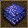
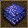

如果你想在地图上添加一些水面，你可以使用水面编辑按钮。
点击这个按钮打开水面编辑模式。两个滚动条将会显示在萤幕右上方。使用上面的滚动条，你可以改变笔刷的半径，使用下面的滚动条你可以改变海岸（河岸）的宽度。在你想要生成水的地方按左键，你就能得到水面。
请确保你要生成水面的地方是平的并且不要让它浸没建筑。
点击这个按钮删除水面。在这种模式下，如果你用鼠标左键点击水面，水面移除。
手动创建一片水面时，由于缺乏光线反射，看起来很不自然。亮度和尺寸可以在萤幕右边的工具选项栏裡调节。点击这个按钮 开启波浪模式，左键点击水面可以在你想要的地方创建一些海浪和波浪。
开启波浪模式，左键点击水面可以在你想要的地方创建一些海浪和波浪。
你可以通过点击这个按钮开启删除波浪模式。这种模式下，左键点击水面会删除鼠标笔刷之下所有的水面波浪。你可以在萤幕右边的工具选项栏调整滑鼠画笔大小。
如果你需要创建水流，你可以使用水流编辑模式。点击这个按钮，你会看见萤幕上出现黑色的网格。你可以在每一个方格裡指定水流的方向。选择一个方格，在水面上你想要水流的方向点击一下，一个指向你选择的方向箭头将出现在你选择的那个方格裡。点击鼠标左键，你可以将箭头移向任何方向。在方格裡点击鼠标右键，你可以删除这个方格裡的水流。
注意：水流编辑模式不仅仅适用于海面，对其他水面也适用。
1、 设置水流的箭头
点击这个按钮打开水面编辑模式。两个滚动条将会显示在萤幕右上方。使用上面的滚动条，你可以改变笔刷的半径，使用下面的滚动条你可以改变海岸（河岸）的宽度。在你想要生成水的地方按左键，你就能得到水面。
请确保你要生成水面的地方是平的并且不要让它浸没建筑。
点击这个按钮删除水面。在这种模式下，如果你用鼠标左键点击水面，水面移除。
手动创建一片水面时，由于缺乏光线反射，看起来很不自然。亮度和尺寸可以在萤幕右边的工具选项栏裡调节。点击这个按钮
你可以通过点击这个按钮开启删除波浪模式。这种模式下，左键点击水面会删除鼠标笔刷之下所有的水面波浪。你可以在萤幕右边的工具选项栏调整滑鼠画笔大小。
如果你需要创建水流，你可以使用水流编辑模式。点击这个按钮，你会看见萤幕上出现黑色的网格。你可以在每一个方格裡指定水流的方向。选择一个方格，在水面上你想要水流的方向点击一下，一个指向你选择的方向箭头将出现在你选择的那个方格裡。点击鼠标左键，你可以将箭头移向任何方向。在方格裡点击鼠标右键，你可以删除这个方格裡的水流。
注意：水流编辑模式不仅仅适用于海面，对其他水面也适用。
1、 设置水流的箭头